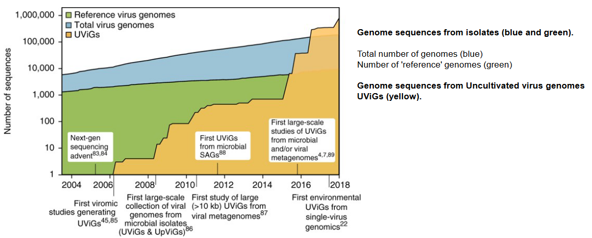
8 Plant and Protist Viruses
The virosphere, which encompasses all viruses, represents a vast and diverse domain of microbial life. Within this realm, there are approximately 1,400 known species of human pathogens, which includes viruses, bacteria, fungi, protozoa, and helminths. However, it’s crucial to recognize that human pathogens constitute a mere fraction of the overall microbial diversity on Earth.
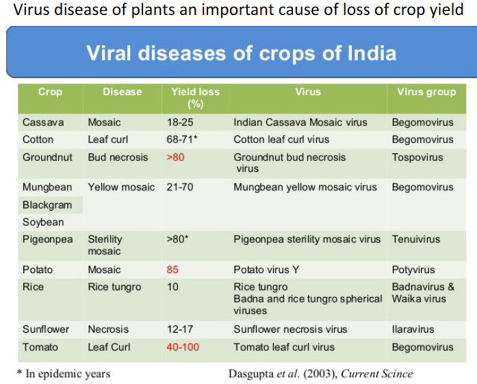
The thing about plant viruses is that they don’t appear as distinct as animal viruses, likely because of size constraints.
Estimates for the total number of microbial species on our planet vary widely, ranging from as low as 120,000 to potentially tens of millions or even higher. As of 2011, despite significant advancements in scientific research, we have only managed to sequence a minuscule portion, approximately 1 × 10−22%, of the total DNA on Earth. This means that our exploration and understanding of microbial diversity, including viruses, remain at a nearly infinitesimal level.
The vast majority of microbial life, including a myriad of viral species, remains unexplored and uncharacterized. The limited sampling of microbial diversity underscores the immense complexity and richness of the virosphere, as well as the ongoing challenges in comprehensively studying and cataloging the diverse array of viruses present in different environments on our planet.
8.1 Plant Viruses
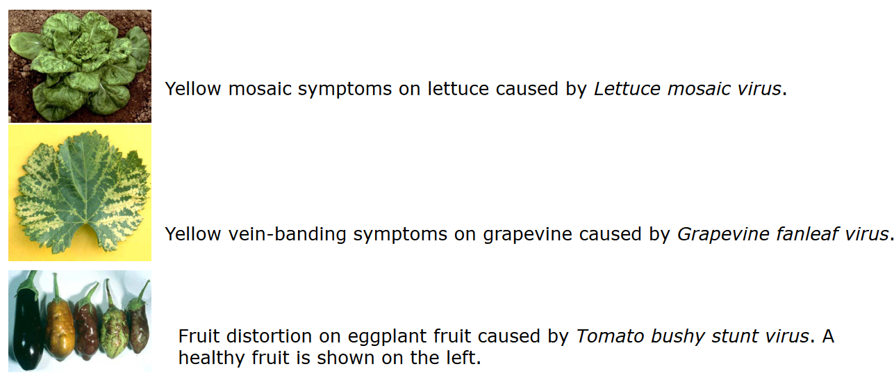
In the realm of plant virology, there are some intriguing entities known as subviral agents, which are smaller than typical viruses and possess only a subset of the properties normally associated with viruses. Viroids represent one such category of subviral agents. These are composed of short strands of nucleic acid, specifically RNA. Unlike traditional viruses, viroids lack a protein coating and rely on the host cell machinery, particularly RNA polymerase, for the replication of their RNA.
Viroids are predominantly found in higher plants and are unique in that they are not known to produce proteins. The absence of a protein coat and the reliance on the host cell machinery make viroids distinct entities with a simplified structure compared to conventional viruses. The role of viroids in plant pathology includes causing diseases, and their existence raises interesting questions about their evolutionary origins and whether they might be relics of a primordial RNA world.
Another intriguing class of subviral agents in plants is represented by satellites, specifically virusoids. Virusoids are single-stranded RNA molecules that are unable to replicate independently and require another virus, known as a helper virus, to facilitate their replication. Similar to viroids, virusoids are not known to produce proteins themselves. Their dependence on a helper virus distinguishes them as subviral agents that rely on the machinery of another virus for their replication.
8.1.1 Transmission
Plant viruses employ various strategies for their transmission, and two main modes are vertical and horizontal transmission. In vertical transmission, the virus is passed from one generation of plants to the next. This can occur externally through contaminated seeds, where the virus is present on the seed coat, or internally through a contaminated embryo. When seeds carry the virus, the resulting plants can propagate the virus as they grow, contributing to the persistence of the viral infection within a plant population.
On the other hand, horizontal transmission involves the movement of the virus from one plant to another, often facilitated by external factors. Vector transmission is a common mechanism where insects or nematodes act as carriers, acquiring the virus from an infected plant and transmitting it to a healthy plant during feeding. Contaminated tools, such as pruning shears or other equipment, can also contribute to horizontal transmission when plant sap carrying the virus is inadvertently transferred from one plant to another. Additionally, experimental or laboratory practices, where researchers handle infected plant material, can result in the transmission of viruses between plants.
8.1.1.1 Insect Vectors
Virus transmission in plants can occur through various mechanisms, and while direct plant-to-plant transmission via plant abrasion and contact with contaminated plant materials is not common, the majority of plant virus transmission involves insect vectors. Insects such as aphids, whiteflies, leafhoppers, mealy bugs, and thrips play a crucial role in spreading viruses among plants.
The process typically begins when an insect feeds on the leaves or stems of an infected plant. During this feeding, the insect acquires the virus from the contaminated plant. Subsequently, when the infected insect feeds on an uninfected plant, it transmits the virus to the healthy plant. This transmission during feeding is a key mechanism in the spread of plant viruses in agricultural and natural settings.
Once a plant is infected with the virus, the virus has the ability to spread internally within the plant. This internal spread allows the virus to colonize various tissues, leading to systemic infection. Importantly, insects may feed multiple times, increasing the likelihood of virus transmission to uninfected plants at high multiplicities.
8.1.1.1.1 Examples
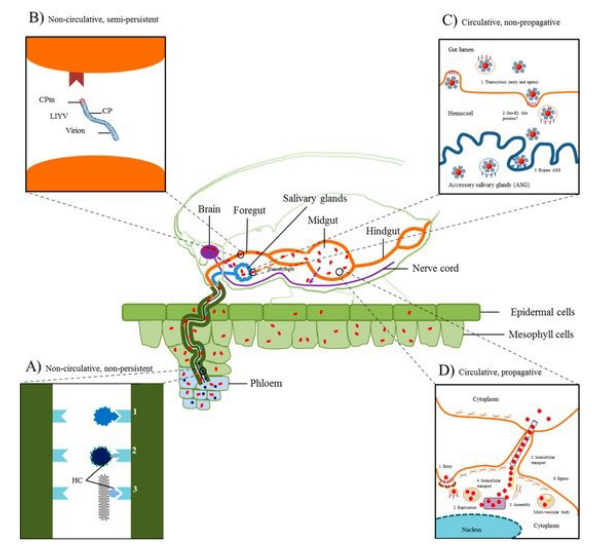
In the context of insect-mediated transmission of plant viruses, there are two main types: noncirculative (nonpersistent) and circulative (persistent) transmission.
In noncirculative transmission, exemplified by potyvirus infection in aphids, the virus attaches to the aphid stylet during feeding on an infected plant. Subsequently, during the next feeding cycle on a healthy plant, the virus is injected into the plant, and the insect is only capable of transmitting the virus for a short period, typically a few hours.
On the other hand, circulative transmission, demonstrated by luteovirus infection in aphids, involves the virus passing through the insect without replication. The virus travels through the hindgut to the hemocoel and then enters the salivary gland. Unlike noncirculative transmission, the virus persists in the insect host and can be transmitted for an extended period, often several days.
In the realm of plant virus transmission, a third category exists known as circulative (persistent) and propagative transmission. Tospoviruses provide an example of this mode of transmission. Unlike noncirculative transmission where the virus does not replicate within the insect vector, and circulative transmission where the virus passes through the vector without replication, circulative and propagative transmission involves the multiplication of the virus within the insect.
In the case of tospoviruses, which are transmitted by the circulative mode, studies have demonstrated that these viruses are capable of multiplying in their insect vectors. This means that the virus undergoes a more conventional infection cycle within the insect host. The ability of tospoviruses to propagate within the insect contributes to their efficient transmission to plants during subsequent feeding. This intricate interaction between the virus and its insect vector adds complexity to the understanding of plant virus transmission mechanisms and has implications for the epidemiology and control of tospovirus-related diseases in crops.
8.1.1.2 Getting into the Plant
Once a plant virus is mechanically introduced into a plant, either through insect feeding or other means, it initiates infection in the inoculated cells, typically within a leaf. This initial infection is crucial for the virus to spread from cell to cell within the inoculated leaf and subsequently invade the entire plant, a process known as systemic infection.
Plant cells are surrounded by walls that are interconnected by transwall channels called plasmodesmata. These plasmodesmata play a vital role in the movement of plant viruses. They serve as conduits that allow the virus to travel directly from one plant cell to another without the need for an extracellular phase. This direct cell-to-cell movement facilitates the efficient spread of the virus within the plant, enabling it to establish a systemic infection and affect various tissues as it progresses through the plant’s growth. Understanding these processes is essential for deciphering the dynamics of plant virus infections and developing strategies for their control.
In the realm of plant virology, all plant viruses possess a distinctive class of proteins known as movement proteins (MPs). These proteins play a crucial role in modifying or altering plasmodesmata, the channels connecting plant cells, thereby facilitating the direct spread of the virus genome from one cell to another. The MP is indispensable for this process.
When a plant virus experiences a mutation in the gene responsible for encoding its movement protein, the virus can still replicate within individual plant cell protoplasts and assemble virus particles. However, the mutated virus becomes defective in its ability to spread within the inoculated leaf and establish a systemic infection in the host plant. This underscores the essential role of the movement protein in the virus’s capacity for cell-to-cell movement, which is a critical aspect of the infection process.
8.1.2 Plant Responses
Plants possess sophisticated antivirus responses to counteract the threat of viral infections, employing a combination of protein-based and RNA-based mechanisms. One prominent defense mechanism is RNA silencing, where plant dicer-like proteins generate small RNA molecules. Transcriptional gene silencing involves the methylation and repression of targeted DNA sequences, hindering the expression of viral genes. Additionally, post-transcriptional gene silencing utilizes small RNAs to suppress the translation of viral RNAs, effectively limiting the production of viral proteins within the plant.
Another crucial aspect of the plant’s antivirus arsenal involves the salicylic acid (SA)-mediated response. SA, a key signaling molecule, plays a central role in orchestrating defense responses. For instance, the detection of pathogen-associated molecular patterns (PAMPs), such as double-stranded RNA (dsRNA), can lead to the accumulation of SA. This triggers a cascade of antiviral responses, including the activation of defense genes, as part of a mechanism known as PAMP-Triggered Immunity (PTI).
While plants have evolved these robust antivirus strategies, plant viruses, in turn, have developed mechanisms to counteract and circumvent these defenses. This ongoing arms race between the plant host and viruses underscores the dynamic nature of the host-pathogen interaction and highlights the intricate strategies employed by both parties to ensure their survival and propagation. The constant evolution of these defense and counter-defense mechanisms shapes the complex dynamics of plant-virus interactions in the ever-evolving battle for dominance within the host organism.
8.1.3 In Humans?
The interaction of plant viruses with humans is primarily indirect, occurring through the consumption of plant material that may harbor these viruses. Plant viruses have been detected in various food items, and when humans and animals consume plant-based products, there is potential for exposure to these viruses. Additionally, plant viruses can be found in the waste of animals and humans after the consumption of contaminated plant material.
One example highlighting the potential interaction is the case of Tobacco Mosaic Virus (TMV), which is present in tobacco plants. TMV has demonstrated stability in the environment, particularly in smoked tobacco products. Active smokers, who inhale and ingest tobacco smoke, may have detectable levels of TMV in their saliva and lungs. Furthermore, studies have shown the presence of anti-TMV immunoglobulin G (IgG) antibodies in the serum of smokers, indicating that the immune system may mount a response against the plant virus.
This evidence suggests that plant viruses can elicit immune responses in both animals and humans. While the impact of these interactions on human health is an area of ongoing research, the detection of plant viruses in the context of human consumption and exposure underscores the need for further exploration into the potential implications of these interactions on human health and immunity.
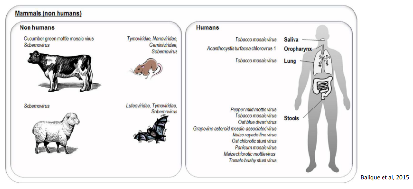
The detection of plant viruses in humans and animals raises questions about the potential role of these organisms in the dissemination of plant viruses in the environment, particularly through human and animal waste. It is indeed very likely that humans and animals can play a role in the transmission and spread of plant viruses, as the viruses present in consumed plant material may be excreted in waste and subsequently introduced into the environment.
However, it’s important to note that there is currently no evidence to suggest that plant viruses can cause diseases in humans. While plant viruses have been detected in various tissues and bodily fluids, their ability to infect and replicate within human cells and tissues has not been demonstrated. The immune system of humans appears to effectively handle exposure to plant viruses without resulting in illness.
The potential role of humans and animals in the environmental dissemination of plant viruses highlights the need for ongoing research to better understand the dynamics of these interactions and their implications for agriculture and public health. As of now, the available evidence suggests that while humans and animals may contribute to the spread of plant viruses, these viruses do not pose a direct health risk to humans.
8.2 Nucleocytoplasmic Large DNA Viruses
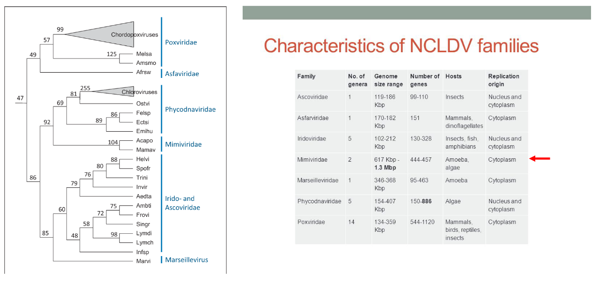
The category of nucleocytoplasmic large DNA viruses (NCLDV) encompasses a diverse group of viruses that share common genomic and structural characteristics, suggesting a potential common viral ancestor. Classified within Baltimore group 1 (dsDNA), these viruses are characterized by large genomes and the presence of numerous genes involved in DNA-related processes, such as DNA replication and repair. A distinctive feature of many viruses within this family is their ability to replicate in both the host’s nucleus and cytoplasm.
These viruses often infect small eukaryotic organisms known as protists. The NCLDV family includes a range of viruses that exhibit unique characteristics, and their ability to infect protists adds to the diversity of host organisms involved in viral interactions. The study of nucleocytoplasmic large DNA viruses provides insights into the evolution and complexity of viruses, as well as their diverse strategies for replication and interaction with host cells.
8.2.1 Mimivirus
Mimivirus belongs to the family Mimiviridae and constitutes a singular genus within this family. The genus is primarily represented by a single identified species known as Acanthamoeba polyphaga mimivirus (APMV), commonly referred to as “mimivirus.” The discovery of APMV occurred serendipitously within the amoeba Acanthamoeba polyphaga. Initially, due to its unusual characteristics, the virus was mistakenly identified as a gram-positive bacterium, leading to its name “Mimivirus,” reflecting its ability to mimic microbial features.
Since the inadvertent discovery of APMV, various strains of mimiviruses have been identified. These strains are categorized into three distinct sublineages, reflecting the genetic diversity within the Mimivirus genus. The exploration of mimiviruses has provided valuable insights into the complexity and diversity of large DNA viruses, highlighting their unique characteristics and evolutionary significance within the viral world.
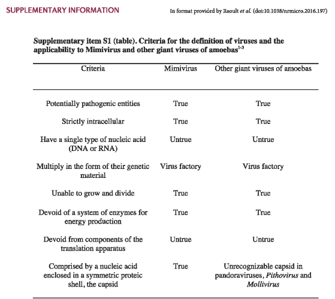
8.2.1.1 Traits
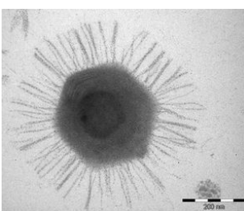
The capsid of Acanthamoeba polyphaga mimivirus (APMV) exhibits distinct structural features. It has an approximate size of about 500 nanometers and is adorned with fibrils measuring between 120 and 140 nanometers in length. These fibrils collectively form a dense layer on the capsid, and they are extensively glycosylated. This glycosylation is essential for facilitating the attachment of APMV to amoebae, a process mediated through interactions with glycans.
The capsid itself adopts an icosahedral structure, except at one specific vertex where a unique and noteworthy feature is present. At this particular vertex, the capsid is covered by a distinctive five-branch starfish-shaped structure known as the ‘stargate.’ Importantly, this stargate structure is devoid of the fibrils that characterize the rest of the capsid. These structural elements contribute to the overall architecture of APMV and play a crucial role in its interactions with host amoebae, shedding light on the intricacies of viral attachment and entry mechanisms.
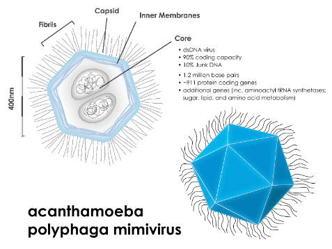
Beneath the external capsid of Acanthamoeba polyphaga mimivirus (APMV), there exists an intricate structure. Enclosed by an inner lipid membrane and fibers, this structure is a spherical lipid bilayer compartment, measuring approximately 340 nanometers in size. Within this compartment resides the viral genome and a variety of proteins. Notably, the nucleocapsid possesses a significant depression that faces the ‘stargate’ on the capsid, creating a cavity. This feature indicates that the nucleocapsid maintains a fixed position relative to the external capsid, showcasing the precision and organization of the viral architecture.
The APMV particles harbor a complex composition, consisting of around 114 proteins. Interestingly, this accounts for only 12% of the predicted number of genes within the virus. Among the identified proteins are those involved in crucial functions such as DNA repair, virus structure, and protein modifications.
8.2.1.2 Compared to Other Viruses
Mimivirus boasts a genome that is notably large and intricate, setting it apart from many other viruses. Its genome is characterized by double-stranded DNA (dsDNA) and has an impressive size of approximately 1,200 kilobases (kb). Within this extensive genetic material, the genome is predicted to harbor 911 protein-encoding genes. To put this into perspective, it’s worth noting that even the smallest known bacterium, Mycoplasma genitalium, possesses a genome of 580 kb, containing approximately 470 protein-encoding genes.
In fact, the Mimivirus genome surpasses the size of several bacterial genomes currently documented in databases. This emphasizes the remarkable complexity and diversity of Mimivirus, underscoring its capacity to carry a vast array of genetic information and encode a multitude of proteins. The expansive genome of Mimivirus contributes to its unique position among viruses, challenging traditional notions of viral genomic simplicity.
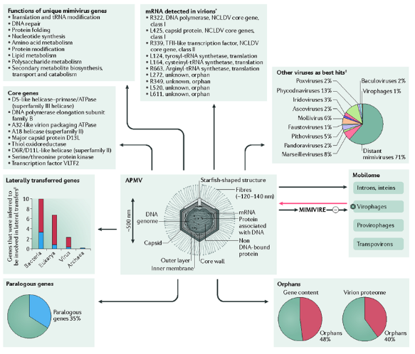
The genome of Acanthamoeba polyphaga mimivirus (APMV) is noteworthy for encoding unique proteins, setting it apart from other viruses. Among the distinctive proteins encoded by APMV genes are translation factors and aminoacyl tRNA synthetases. These components play crucial roles in the translation process, emphasizing the virus’s ability to manipulate cellular machinery for its own replication.
Moreover, the APMV genome goes beyond the typical viral genetic repertoire by encoding four different transfer RNAs (tRNAs). tRNAs are essential molecules involved in protein synthesis, serving as adapters that bring amino acids to the growing polypeptide chain during translation. The presence of these tRNAs in the APMV genome underscores the virus’s capacity to independently contribute to the cellular processes necessary for protein synthesis, further highlighting the intricacies of its molecular biology.
8.3 Virophages
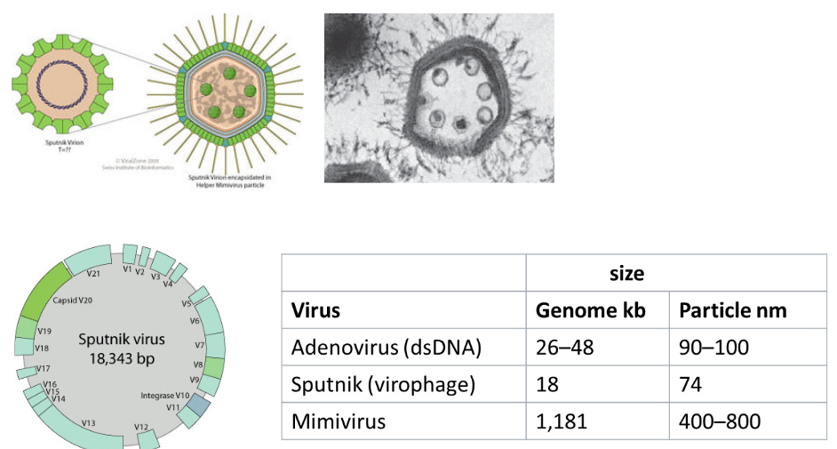
The discovery of virophages has added a layer of complexity to our understanding of viral interactions. Interestingly, giant viruses, such as Acanthamoeba polyphaga mimivirus (APMV), have been found to be susceptible to infection by smaller viruses known as virophages. Virophages are characterized by their small size, typically ranging from 35 to 74 nanometers, and exhibit an icosahedral structure.
This phenomenon of virophages infecting giant viruses highlights the intricate dynamics within the microbial world. It introduces a viral component that influences the replication and behavior of giant viruses, potentially impacting the ecological relationships within microbial communities. The study of virophages expands our knowledge of the diverse interactions and dependencies that exist among different types of viruses, contributing to the ongoing exploration of viral ecology and evolution.
8.3.1 Replication
Virophages exhibit a unique dependence on other viruses, particularly giant viruses like mimiviruses, for their replication. Unlike many viruses that can replicate independently within their host organisms, virophages are unable to do so in amoeba hosts on their own. Instead, virophages are reliant on the presence of specific viruses, such as mimiviruses, for their replication.
The first identified virophage, named Sputnik, was isolated alongside mamavirus, a member of the mimivirus group. In co-infection scenarios, Sputnik has been observed to reduce the infectivity of mamavirus within the amoeba host. Additionally, the presence of Sputnik during co-infection has been linked to aberrant particle morphology in mamavirus, suggesting that virophages can have a modulating effect on the replication and behavior of their giant virus hosts. This intricate relationship highlights the interconnected nature of viral interactions and the role that virophages play in influencing the dynamics of viral infections within amoebas.
8.4 Infecting Humans?
While giant viruses of amoebae, such as mimiviruses and marseilleviruses, have been detected in studies involving humans, there is currently no evidence to suggest that these viruses directly cause disease in humans.
Mimiviruses have been identified through serological, molecular, and culture studies in patients with pneumonia. The detection of mimiviruses in these studies raises questions about their potential interactions with the human respiratory system, but as of now, there is no conclusive evidence linking them to human disease.
Similarly, marseilleviruses have been found in stool samples taken from humans. However, despite their presence, there is currently no confirmed evidence that marseilleviruses lead to disease in humans.
The relationship between giant viruses of amoebae and human health is an area of ongoing research, and scientists continue to investigate the potential impact of these viruses on human biology and disease.